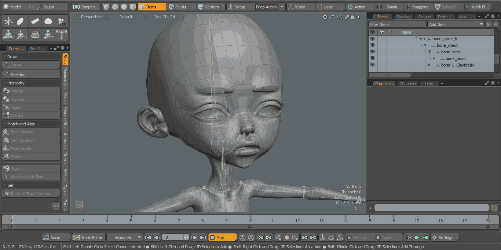

- Yonseo Rigging Kit for Modo
Keyframes are used as a tool to help us with weight adjustments and animation. In this lesson we will learn to use keyframes.
Keyframes
Lets work with keyframes.
Select the bone 'bone_head'.
Under settings change both the end number of frames to 20.
Now click the small circle in rotation X, Y, Z so they turn red.
Click on the 10th keyframe on the bottom timeline and rotate your head to the left. Your transformations should change
on the right panel. I've rotated Y to -52.5
Deselect everything and press the play button at the bottom center. It will animate!

This becomes useful when you need to adjust your weights on the model. To get a better view of what the character will look
like when it moves we can left click and drag on the timeline and it will animate as well without pressing play.
In the next lesson we will learn about problem solving!